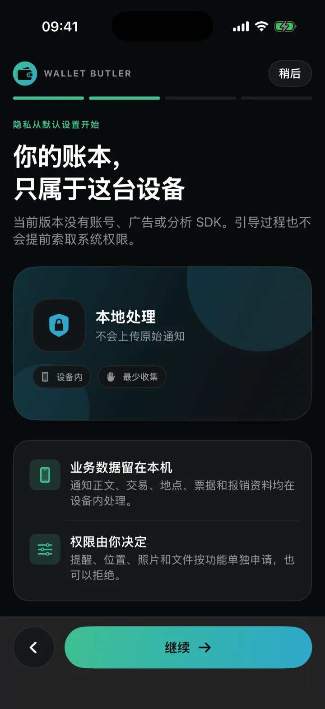

⌁ 通知自动记录
支付之后，
支付之后，
记录自己出现。
由你在系统里配置通知自动化。Wallet Butler 只接收快捷指令实际交来的内容，在设备内提取金额、商户与时间。
不读取支付 App 数据库，也无法查询历史系统通知YOUR MONEY, CLEARLY KEPT
通知自动记录，截图随手补录，账单定期对账。Wallet Butler 把琐碎消费整理成一眼能看懂的本地账本。

真实 iOS 界面与产品视觉预览
设备内处理当前版本没有开发者服务器
规则可以复核确定性解析，可测试、可版本化
多入口互相补位通知省事，截图补录，账单核对
A QUIETER WAY TO KEEP TRACK
真正好用的记账，不是让你更勤快地填表，而是在支付发生之后，安静地留下足够清楚的记录。
Wallet Butler 连接 iPhone 允许的几个入口，同时诚实保留它们的边界：自动化负责省事，截图负责补位，账单负责最终核对。
BUILT AROUND REAL LIFE
每一层都解决一个真实问题，不把“自动”包装成无法兑现的魔法。
由你在系统里配置通知自动化。Wallet Butler 只接收快捷指令实际交来的内容，在设备内提取金额、商户与时间。
不读取支付 App 数据库，也无法查询历史系统通知前台支付等通知盲区，可用快捷指令截屏并在设备内 OCR。截图识别后即丢弃，不复制进账本。
行程、消费、票据和多次报销到账归在一起。结束出差时，不再从聊天记录里回忆每一笔。
每笔自动记录都带着来源、解析方式、置信度和原始事件引用。拿不准的内容交给你，而不是悄悄猜答案。
PRIVACY, NOT A PROMISE
当前版本没有账号、开发者服务器、广告或分析 SDK。通知正文、交易、截图 OCR 文字、地点与票据默认只在设备内处理。
只记录输入里真实存在的字段，不补造完整订单。
提醒、位置、照片与文件按功能使用，均可拒绝。
可主动导出完整备份，也可在 App 内删除全部数据。
NO SINGLE POINT OF FAILURE
实时入口负责省事，最终账单负责兜底。任何单一入口都不被宣传成“百分之百不漏单”。
后台或锁屏时，通过系统快捷指令接收实际出现的支付通知。
银行推送、短信或 Wallet 通知补充支付 App 的部分盲区。
前台支付没有通知时，用一次截屏完成设备内识别。
定期导入账单，发现遗漏、重复与待匹配项目。
COMING TO IPHONE
Wallet Butler 正在完成真实通知覆盖、快捷指令与真机发布验收。